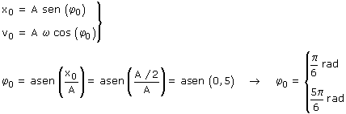
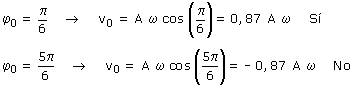

a)
Ecuaciones del movimiento armónico:
|
|
Parámetros: A = 12 cm /2 = 6 cm , T = 2 s, ω = 2π/T = π rad/s, φ0 (Incógnita) |

Aplicación: Situación inicial
Datos: t0 = 0, x0 = A/2, v0 (Positiva), Incógnita: φ0

No se añade k·2π a las soluciones porque buscamos la fase en la primera oscilación (k = 0)
Para decidir cual de los dos valores es el correcto se comprueba la velocidad correspondiente:

Luego la fase inicial es π/6, se veía venir este resultado (•)